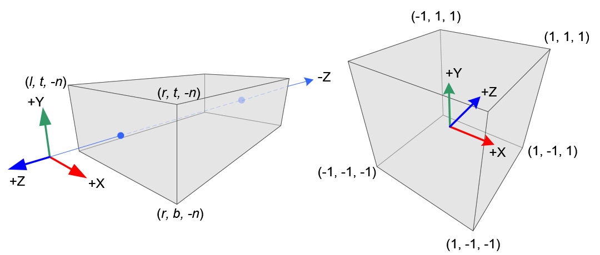
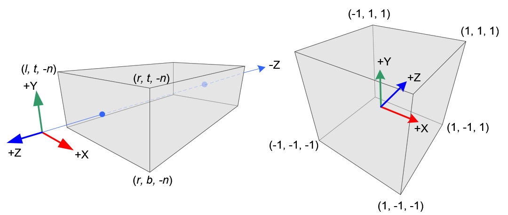

transform in render detail
$$ \begin{bmatrix} x_{eye} \\ y_{eye} \\ z_{eye} \\ w_{eye} \end{bmatrix} = M_{view} \cdot M_{model} \cdot \begin{bmatrix} x_{obj} \\ y_{obj} \\ z_{obj} \\ w_{obj} \end{bmatrix} = M_{modelView} \cdot \begin{bmatrix} x_{obj} \\ y_{obj} \\ z_{obj} \\ w_{obj} \end{bmatrix} $$
$$ \begin{bmatrix} x_{clip} \\ y_{clip} \\ z_{clip} \\ w_{clip} \end{bmatrix} = M_{projection} \cdot \begin{bmatrix} x_{eye} \\ y_{eye} \\ z_{eye} \\ w_{eye} \end{bmatrix} = M_{projection} \cdot M_{view} \cdot M_{model} \cdot \begin{bmatrix} x_{obj} \\ y_{obj} \\ z_{obj} \\ w_{obj} \end{bmatrix} $$
$$ \begin{bmatrix} x_{ndc} \\ y_{ndc} \\ z_{ndc} \end{bmatrix} = \begin{bmatrix} { x_{clip} \over w_{clip} } \\ { y_{clip} \over w_{clip} } \\ { z_{clip} \over w_{clip} } \end{bmatrix} $$
glViewport(topX, topY, width, height)和glDepthRange(near, far)
$$ \begin{bmatrix} x_{screen} \\ y_{screen} \\ z_{screen} \end{bmatrix} = \begin{bmatrix} { {width \over 2}x_{ndc} + (topX + {width \over 2}) } \\ { {height \over 2}y_{ndc} + (topY + {height \over 2}) } \\ { {{far - near} \over 2}z_{ndc} + {(far + near) \over 2}) } \end{bmatrix} $$
transform a normal vector from object to eye space
$$ \begin{bmatrix} nx_{eye} \\ ny_{eye} \\ nz_{eye} \\ nw_{eye} \\ \end{bmatrix} = (M_{modelView}^{-1})^{T} \begin{bmatrix} nx_{obj} \\ ny_{obj} \\ nz_{obj} \\ nw_{obj} \end{bmatrix} $$
 

Depth and ViewZ
threejs的src\renderers\shaders\ShaderChunk\packing.glsl.js中包含了两个函数，在examples\webgl_depth_texture.html中渲染深度，显示使用这个方法
float viewZToPerspectiveDepth(const in float viewZ, const in float near, const in float far) {
return ( ( near + viewZ ) * far ) / ( ( far - near ) * viewZ)
}
float perspectiveDepthToViewZ(const in float invClipZ, const in float near, const in float far) {
return ( near * far ) / ( ( far - near ) * invClipZ - far )
}
$$ p_{clip} = \begin{bmatrix} 2n \over {r - l} & 0 & {r + l} \over {r - l} & 0\\ 0 & 2n \over {t - b} & {t + b} \over {t - b} & 0 \\ 0 & 0 & A & B \\ 0 & 0 & -1 & 0 \end{bmatrix} $$
其中$$A = - {{f + n} \over {f - n}}$$
$$B = {-2fn \over {f - n}}$$
$$ z_{clip} = A \times z_{view} + B = -{{f + n} \over {f - n}} \times z_{view} + {-2fn \over {f - n}} $$
因为 \(z = z_{view}\) 所以有$$ z_{ndc} = { {{-{f + n} \over {f - n}}z + {-2fn \over {f - n}}} \over -z} = {{ f + n + 2fn{1 \over z}} \over {f - n}} = {{ fz + nz + 2fn} \over {f - n}z } \label{ref1} $$
$$ depth = {z_{ndc}{1 \over 2}} + {1 \over 2} \label{ref2} $$
把 [\ref{ref1}] 代入 [\ref{ref2}] 有$$ depth = {{fz + nz + 2fn} \over {2(f - n)z}} + {{(f - n)z} \over {z(f - n)z}} = {{fz + fn} \over {fz - nz}} = {{(n + z)f} \over {(f - n)z}} $$
求取z有, \(d = depth \)$$ d(f - n)z = (n + z)f $$ $$ \Rightarrow z(d(f - n) - f) = nf $$ $$ \Rightarrow z = { nf \over {d(f - n) -f}} $$
Reconstructing Position From Depth
That finds great use for deferred rendering: reconstructing the 3D position of a previously-rendered pixel (either in view-space or world-space) from a single depth value
参考
符合含义
\(n\) camera near
\(f\) camera far